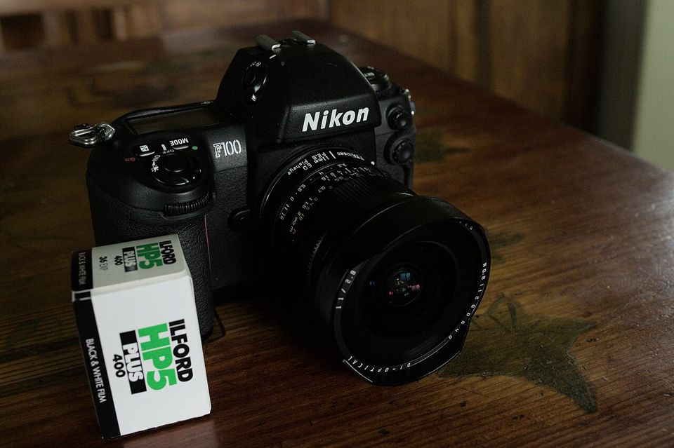

36 EXP. / 필름 카메라 종류별 가이드
필름 카메라 종류별 가이드
판형과 형식에 따라 나눈 10가지 필름 카메라. 원리, 추천 기종, 중고로 살 때 확인할 것, 대략적인 시세를 정리했습니다.

자동 똑딱이 135
초점, 노출, 필름 감기까지 자동. 들고 다니며 일상을 찍기 좋습니다.
자세히 보기
수동 SLR 135
렌즈로 들어온 상을 거울로 그대로 봅니다. 조리개와 셔터를 직접 정하며 노출을 배우기에 가장 좋습니다.
자세히 보기
자동초점 SLR 135
90~2000년대 자동초점 필름 SLR. 조작이 요즘 디지털 카메라와 비슷합니다.
자세히 보기
레인지파인더 135
뷰파인더 속 두 개의 상을 겹쳐 초점을 맞춥니다. 거울이 없어 작고 조용합니다.
자세히 보기
하프프레임 135
35mm 한 컷을 반으로 나눠 씁니다. 36장 롤로 72장. 두 장을 나란히 붙인 사진이 매력입니다.
자세히 보기
이안반사 120
렌즈 두 개가 위아래로. 위는 보는 용, 아래는 찍는 용. 허리 높이에서 내려다보며 찍습니다.
자세히 보기
중형 SLR · RF 120
120 필름을 쓰는 본격 중형. 35mm보다 3~4배 큰 면적이 주는 부드러운 계조가 특징입니다.
자세히 보기
대형 뷰카메라 4×5
시트 필름을 한 장씩 넣어 찍습니다. 렌즈와 필름면을 기울이는 무브먼트로 원근과 초점면을 조절합니다.
자세히 보기
토이 · 일회용 135 / 120
플라스틱 렌즈의 비네팅과 빛샘이 매력. 일회용 카메라는 필름이 미리 들어 있어 통째로 현상소에 맡깁니다.
자세히 보기
인스턴트 인스턴트
찍으면 바로 사진이 나옵니다. 현상소가 필요 없습니다.
자세히 보기
Nikon FM2 기종
배터리 없이도 셔터가 작동하는 기계식 SLR. 최고 1/4000초 셔터로, 수동 필름 카메라 입문의 대표 기종입니다.
자세히 보기Pentax K1000 기종
군더더기 없이 노출의 기본만 남긴 수동 SLR. 오랫동안 사진학과 학생의 첫 카메라로 쓰였습니다.
자세히 보기
Canon AE-1 기종
셔터 우선 자동 노출을 대중화한 SLR. 셔터 속도만 정하면 조리개는 카메라가 맞춥니다.
자세히 보기
Olympus μ[mju:]-II 기종
주머니에 들어가는 145g 똑딱이에 밝은 35mm f/2.8 단렌즈. 미국 이름은 Stylus Epic입니다.
자세히 보기
Contax T2 기종
칼 자이스 조나 38mm 렌즈를 단 티타늄 고급 똑딱이. 가격이 크게 올라 지금은 "구하기 어려운 명기"가 되었습니다.
자세히 보기